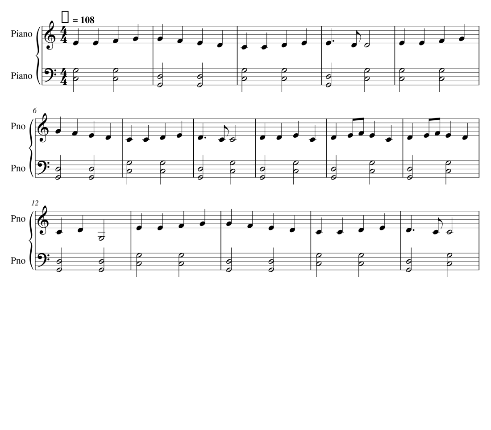
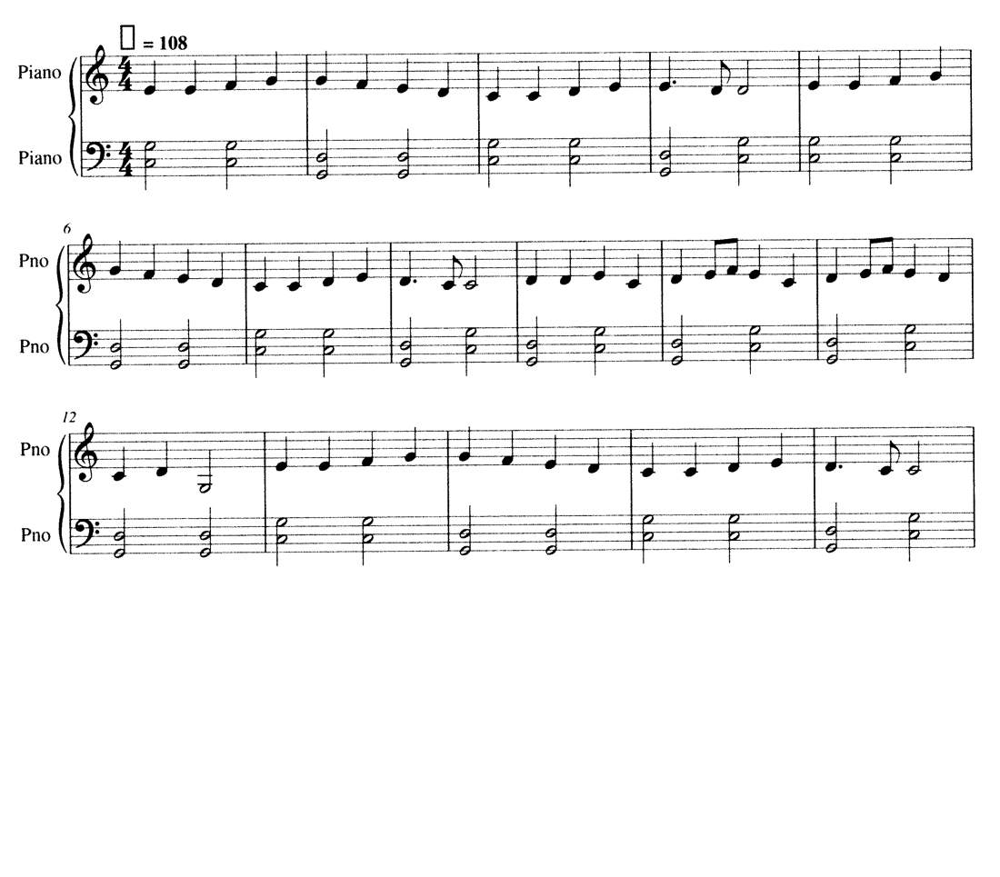
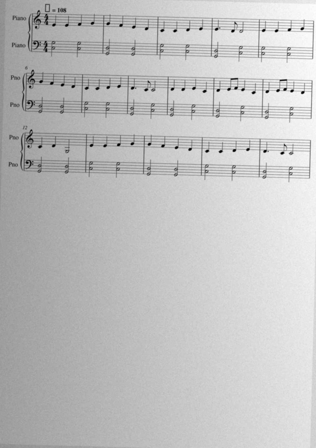

How much of a page
does OMR give back?
Two public-domain pieces with exact encodings were rendered to pages by Verovio, clean, lightly degraded to imitate a photocopy (slight skew, blur, hard threshold), and heavily degraded to imitate a phone photograph (half resolution, 1.5° skew, uneven lighting, blur, noise, JPEG), and read back by three open OMR engines. Because the page was produced from the encoding, every note on both staves has a known answer. Recall is measured by aligning each staff's attack sequence to the truth; "notes incl. chord tones" counts every pitch in the truth, not just the top of each attack.



Mozart, Sonata in C K. 545, first movement (73 bars, KernScores encoding)
Ground truth: 585 right-hand attacks (600 notes), 593 left-hand attacks (678 notes).
| Pages | Engine | Measures | RH attacks exact | RH notes incl. chord tones | RH longest run | LH attacks exact | LH notes incl. chord tones | LH longest run | Durations right (RH) |
|---|---|---|---|---|---|---|---|---|---|
| clean | homr 0.7 | 73 / 74 | 100% | 100% | 585 | 100% | 100% | 593 | 99% |
| clean | oemer 0.1.8 | 73 / 74 | 99% | 99% | 260 | 99% | 99% | 224 | 96% |
| clean | Audiveris 5.11 | 73 / 74 | 100% | 100% | 585 | 91% | 92% | 232 | 100% |
| degraded | homr 0.7 | 73 / 74 | 100% | 100% | 585 | 100% | 100% | 593 | 99% |
| degraded | oemer 0.1.8 | 69 / 74 | 98% | 98% | 172 | 99% | 99% | 161 | 89% |
| degraded | Audiveris 5.11 | 73 / 74 | 99% | 99% | 404 | 91% | 91% | 203 | 100% |
| harsh | homr 0.7 | 73 / 74 | 100% | 100% | 359 | 100% | 100% | 370 | 99% |
| harsh | oemer 0.1.8 | 66 / 74 | 74% | 74% | 80 | 89% | 88% | 163 | 95% |
| harsh | Audiveris 5.11 | 49 / 74 | 36% | 37% | 20 | 31% | 32% | 33 | 23% |
Beethoven, Ode to Joy theme, easy two-hand arrangement (16 bars, encoded here)
Ground truth: 62 right-hand attacks (62 notes), 32 left-hand attacks (64 notes).
| Pages | Engine | Measures | RH attacks exact | RH notes incl. chord tones | RH longest run | LH attacks exact | LH notes incl. chord tones | LH longest run | Durations right (RH) |
|---|---|---|---|---|---|---|---|---|---|
| clean | homr 0.7 | 16 / 16 | 100% | 100% | 62 | 100% | 100% | 32 | 100% |
| clean | oemer 0.1.8 | 16 / 16 | 100% | 100% | 62 | 100% | 100% | 32 | 100% |
| clean | Audiveris 5.11 | 16 / 16 | 100% | 100% | 62 | 100% | 100% | 32 | 100% |
| degraded | homr 0.7 | 16 / 16 | 100% | 100% | 62 | 100% | 100% | 32 | 100% |
| degraded | oemer 0.1.8 | 16 / 16 | 100% | 100% | 62 | 100% | 100% | 32 | 97% |
| degraded | Audiveris 5.11 | 16 / 16 | 100% | 100% | 62 | 100% | 100% | 32 | 100% |
| harsh | homr 0.7 | 16 / 16 | 100% | 100% | 62 | 100% | 100% | 32 | 100% |
| harsh | oemer 0.1.8 | 16 / 16 | 63% | 63% | 21 | 78% | 78% | 14 | 85% |
| harsh | Audiveris 5.11 | 16 / 16 | 100% | 100% | 62 | 81% | 81% | 11 | 97% |